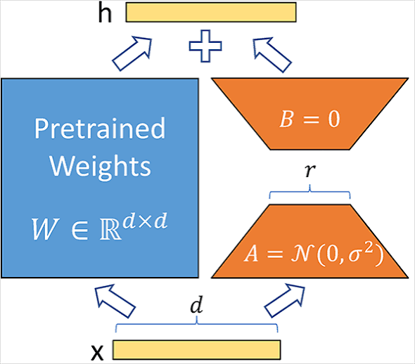

Practical NLP for Risk Modeling, Part IV - Parameter Efficient Fine-tuning with Low-rank Adaptation
Parameter efficient fine-tuning of DistilBERT on tornado severity classification task using NOAA event narratives.
Python
Transformers
Published
August 25, 2026
In Part II of the Practical NLP for Risk Modeling series, we fine-tuned DistilBERT end-to-end on NOAA tornado event narratives. Instead of treating DistilBERT as a fixed feature extractor, every parameter in the model was allowed to update during training. The result was a considerable improvement over the frozen-embedding approach from Part I. But the improvement came at the cost of updating and storing an entire copy of the model for a single downstream task. For DistilBERT this isn’t terribly burdensome. The model has roughly 67 million parameters which is small by modern transformer standards. But the same training approach becomes increasingly expensive as models get larger. If we wanted separate models for property, casualty, claims triage, and submission classification, full fine-tuning would require maintaining a separate set of model weights for each one.
We’ll revisit the tornado severity classification problem one last time and introduce parameter-efficient fine-tuning (PEFT). Specifically, we’ll use Low-Rank Adaptation (LoRA) through Hugging Face’s peft library. The goal is to determine whether we can obtain performance comparable to full fine-tuning while updating only a small fraction of DistilBERT’s parameters. The base model, dataset, target definition, temporal split, tokenizer, batch sizes, and number of training epochs will all be consistent with Part II. The only major difference will be how the model itself is adapted.
Full Fine-Tuning Revisited
Recall the setup from Part II: We use NOAA Storm Events records from 2008 through 2025 and retain tornadoes rated EF2 or greater.
Our binary target is:
CLASS = 0: EF2 tornado.
CLASS = 1: EF3, EF4, or EF5 tornado.
The model receives only the free-text EVENT_NARRATIVE and attempts to determine whether the event represents an EF2 tornado or a more severe EF3+ event.
Training data consists of observations from 2008 through 2022, while observations from 2023 through 2025 are reserved for validation. Keeping the validation period strictly later than the training data gives us a more realistic approximation of how the model might generalize to unseen event narratives.
With full fine-tuning, gradients flow through both the newly initialized classification head and the pretrained DistilBERT encoder. Every trainable weight can therefore be updated.
If a layer contains a weight matrix
\[
W \in \mathbb{R}^{d \times k},
\]
full fine-tuning learns a new version of that entire matrix:
\[
W' = W + \Delta W.
\]
The update matrix \(\Delta W\) contains the same number of elements as \(W\). If \(W\) contains several hundred thousand parameters, several hundred thousand parameters are potentially adjusted.
Parameter-Efficient Fine-Tuning
Parameter-efficient fine-tuning refers to a family of techniques that adapt a pretrained model without updating all of its original parameters.
The idea is that a pretrained transformer already contains a huge amount of useful information. When adapting that model for a narrow downstream task, it may not be necessary to modify all of that information. We can freeze most or all of the pretrained weights and introduce a much smaller collection of trainable parameters. Low-Rank Adaptation (LoRA) is one of the more popular approaches to doing this.

Adapter matrices used in LoRA
LoRA freezes the original pretrained weights and represents the downstream weight update using two smaller low-rank matrices. The original paper showed that these learned low-rank updates could achieve performance comparable to full fine-tuning while simultaneously reducing the number of trainable parameters.
Suppose one of the transformer’s linear layers contains the matrix
\[
W_0 \in \mathbb{R}^{d \times k}.
\]
During full fine-tuning, we effectively learn a dense update
\[
\Delta W \in \mathbb{R}^{d \times k},
\]
such that
\[
W = W_0 + \Delta W.
\]
LoRA makes the assumption that the useful change required for a downstream task may have lower dimensionality than the full weight matrix. Instead of learning every element of \(\Delta W\), LoRA approximates it as the product of two smaller matrices:
\[
\Delta W = BA,
\]
where
\[
A \in \mathbb{R}^{r \times k} \\
B \in \mathbb{R}^{d \times r}
\]
The rank \(r\) is intentionally small (\(r \ll \min(d,k)\)). The adapted layer becomes
\[
W = W_0 + BA.
\]
The original \(W_0\) remains frozen. Only \(A\) and \(B\) are trained. This usually significantly reduces the number of parameters that need to be optimized. For example, suppose \(W_0 \in \mathbb{R}^{768 \times 768}\), which consists of 589,824 parameters. If we use LoRA with rank 8, the two LoRA matrices contain only \(8 \times 768 + 768 \times 8\) = 12,288 parameters, which corresponds to only ~2% of the original parameter count. Note that LoRA isn’t replacing the pretrained matrix: The low-rank update is added alongside the pretrained weights at inference time.
For an input vector \(x\), instead of computing
$ h = W_0x, $
the adapted layer computes
$ h = W_0x + BAx. $
where \(\alpha\) is a scaling parameter that controls the contribution of the LoRA update.
Matrix Rank
I wanted to briefly clarify the concept of ‘low rank’. It is something that gets waved away in many LoRA tutorials, but is crucial to really understanding the technique. The rank of a matrix is the maximum number of linearly independent row vectors or column vectors it contains. It measures the amount of non-redundant information or the true dimensionality of the space spanned by the matrix. For an \(m \times n\) matrix, the maximum possible rank is
\[
\mathrm{rank}(W) \leq \mathrm{min}(m,n).
\]
So a \(768 \times 768\) weight matrix could have rank as high as 768. But if its rank were actually only 8, all of the information in that matrix could be represented using only eight independent column vectors. That would make it a low-rank matrix. In a low-rank matrix, rows or columns can be recreated as combinations of a much smaller subset of core vectors. Within the context of LoRA, \(r\) stands for the rank of the low-rank decomposition.
LoRA doesn’t presume that the pretrained transformer’s weights themselves are low rank. The hypothesis is that the change we need to make to those weights during fine-tuning can often be represented by a much lower-rank matrix. For example, if
\[
\Delta W \in \mathbb{R}^{768 \times 768},
\]
Instead of updating the full \(768 \times 768\) parameters as in full fine-tuning, LoRA assumes that the update to \(\Delta W\) can be approximated as the product of two smaller matrices (in this example, \(r = 8\)):
\[
A \in \mathbb{R}^{8 \times 768} \\
B \in \mathbb{R}^{768 \times 8}.
\]
When we multiply \(BA\), we get a matrix \(\Delta W\) that has the same dimension as \(W\).
W = BA ^{768 }. Replacing 8 with any value less than 768 will result in a low-rank matrix, but typically \(r\) is kept relatively small (usually no larger than 64).
The intuition is that adapting DistilBERT to our tornado-classification problem probably does not require modifying hundreds of thousands of weights in every attention matrix. The pretrained model already knows a lot about language. Fine-tuning may only need to nudge the model in a relatively small number of task-specific directions. Perhaps the pretrained model already understands words and phrases like destroyed, major structural damage, debris, roof removed, and injuries. Our task doesn’t require teaching the model English from scratch. It primarily needs to learn which combinations of those representations are useful for distinguishing EF2 from EF3+ tornado narratives. LoRA assumes that this adjustment lives in a relatively small subspace.
The easiest mathematical way to understand why low-rank representations are useful is through the singular value decomposition (SVD). Any matrix \(W\) can be decomposed as:
\[
W = U \Sigma V^T
\]
where
\(U\) contains a set of orthogonal vectors,
\(V\) contains another set of orthogonal vectors,
\(\Sigma\) contains the singular values, which indicate the relative importance of those vector pairs.
For a square matrix, the singular values can be written as:
The larger a singular value is, the more important its associated vectors are in reconstructing the original matrix. If most of the information in \(W\) is concentrated in the first few singular values, we can approximate \(W\) using only the first \(r\) components:
\[
W_r = U_r \Sigma_r V_r^T
\]
This is called a rank-r approximation. For example, if \(W \in \mathbb{R}^{768 \times 768}\) and we choose \(r = 8\), then
where \(W_8 \in \mathbb{R}^{768 \times 768}\), but the approximation is built from only eight singular components rather than all 768. This is conceptually what LoRA is doing, but LoRA does not compute the SVD of the desired weight update and then keep the largest eight singular components. The update \(\Delta W\) is not known beforehand. LoRA instead imposes the low-rank structure directly and learns \(A\) and \(B\) through gradient descent.
For an example of how low-rank approximations via SVD can be used in image compression, check out this post.
Experimentation
The same environment used in parts 2 and 3 is used here:
You’ll also need to make sure the Hugging Face peft library is installed:
$ python -m pip install peft
We can inspect the layers of our original “distilbert-base-uncased” by printing the model object:
from transformers import AutoModelForSequenceClassificationmodel_name ="distilbert-base-uncased"base_model = AutoModelForSequenceClassification.from_pretrained( model_name, num_labels=2)print(base_model)
c:\Users\jtriv\miniforge3\envs\bert\Lib\site-packages\tqdm\auto.py:21: TqdmWarning: IProgress not found. Please update jupyter and ipywidgets. See https://ipywidgets.readthedocs.io/en/stable/user_install.html
from .autonotebook import tqdm as notebook_tqdm
Warning: You are sending unauthenticated requests to the HF Hub. Please set a HF_TOKEN to enable higher rate limits and faster downloads.
Loading weights: 100%|██████████| 100/100 [00:00<00:00, 880.30it/s, Materializing param=distilbert.transformer.layer.5.sa_layer_norm.weight]
DistilBertForSequenceClassification LOAD REPORT from: distilbert-base-uncased
Key | Status |
------------------------+------------+-
vocab_layer_norm.weight | UNEXPECTED |
vocab_transform.weight | UNEXPECTED |
vocab_projector.bias | UNEXPECTED |
vocab_layer_norm.bias | UNEXPECTED |
vocab_transform.bias | UNEXPECTED |
classifier.weight | MISSING |
pre_classifier.bias | MISSING |
classifier.bias | MISSING |
pre_classifier.weight | MISSING |
Notes:
- UNEXPECTED :can be ignored when loading from different task/architecture; not ok if you expect identical arch.
- MISSING :those params were newly initialized because missing from the checkpoint. Consider training on your downstream task.
Within each transformer block there is a self-attention module containing several linear projections:
q_lin
k_lin
v_lin
out_lin
These correspond to the query, key, value, and output projections used by self-attention. The current Hugging Face DistilBERT implementation defines each of these as a linear transformation from the model’s 768-dimensional representation back into 768 dimensions.
The current PEFT documentation points out that targeting all linear layers can give LoRA substantially more capacity which can enable performance closer to full fine-tuning. PEFT supports this directly in the LoRA configuration with:
target_modules="all-linear"
More targeted adaptation is possible (for example, only adapting the query and value projections), but our experiments will use target_modules="all-linear". peft locates the linear layers inside the existing model, freezes the original weights, and attaches trainable low-rank matrices to those layers.
For detailed instructions on creating the NOAA events dataset, refer to the second post in this series. The pre-processing steps are reproduced in the next cell.
Because the dataset and tokenization pipeline are identical, differences in the two experiments should primarily reflect the adaptation strategy rather than differences in the underlying inputs.
Import the necessary callables from peft and initalize a fresh copy of DistilBERT. We pass the model along with LoraConfig into get_peft_model:
Loading weights: 100%|██████████| 100/100 [00:00<00:00, 783.16it/s, Materializing param=distilbert.transformer.layer.5.sa_layer_norm.weight]
DistilBertForSequenceClassification LOAD REPORT from: distilbert-base-uncased
Key | Status |
------------------------+------------+-
vocab_layer_norm.weight | UNEXPECTED |
vocab_transform.weight | UNEXPECTED |
vocab_projector.bias | UNEXPECTED |
vocab_layer_norm.bias | UNEXPECTED |
vocab_transform.bias | UNEXPECTED |
classifier.weight | MISSING |
pre_classifier.bias | MISSING |
classifier.bias | MISSING |
pre_classifier.weight | MISSING |
Notes:
- UNEXPECTED :can be ignored when loading from different task/architecture; not ok if you expect identical arch.
- MISSING :those params were newly initialized because missing from the checkpoint. Consider training on your downstream task.
device: cpu
It’s necessary to create a fresh copy of the model, since get_peft_model modifies the supplied model by attaching adapter modules, so we don’t want to reuse our already fine-tuned model from the previous experiment. Hugging Face specifically notes that PEFT modifies the base model in place.
Best results were realized when \(\alpha / r = 4\). This will vary from application to application, but \(r=32\) and \(\alpha = 128\) worked best for our dataset.
The LoraConfig arguments are worth calling out:
task_type=TaskType.SEQ_CLS: Tells PEFT that we’re performing sequence classification.
r=32: The rank of the low-rank decomposition.
lora_alpha=128: Controls the scaling applied to the LoRA contribution
lora_dropout=0.05: Applies dropout within the LoRA branch during training and serves as an additional form of regularization.
target_modules="all-linear: Insert LoRA adapters into DistilBERT’s linear layers.
modules_to_save: Allows the classification layers to remain trainable and save them along with the LoRA adapters.
Hugging Face provides a convenient method to verify that our model has been configured correctly, and to provide us with a count of the number of trainable parameters:
lora_model.print_trainable_parameters()
trainable params: 3,246,338 || all params: 70,201,348 || trainable%: 4.6243
With this configuration, less than 5% of the model is trainable, which is what we expect. We’re still running the complete DistilBERT model during the forward pass, but we’re optimizing only a small collection of adapter and classification parameters during backpropagation.
We can continue using the ordinary Hugging Face Trainer. PEFT models are designed to work with the standard Transformers training workflow; parameters with requires_grad=False remain frozen while the adapter parameters are optimized. Most of the configuration remains identical to the full fine-tuning experiment. The main change is the learning rate, which we changed from 2e-5 to 1e-4. According to the docs:
LoRA commonly tolerates and often benefits from a higher learning rate, since we’re optimizing a small set of newly initialized adapter parameters instead of gently modifying every pretrained parameter,
What stands out is the jump in ROC-AUC and average precision from epoch 2 to 3. ROC-AUC goes from 0.783 to 0.924, and average precision from 0.572 to 0.813. This might reflect the adapter suddenly having enough influence on the frozen model to learn the task effectively.
Initially I was surprised that the LoRA training run took almost as long as the full fine-tuning training run (77 minutes vs. 81 minutes on CPU respectively). I assumed since only 5% of model parameters were being updated, this should have been reflected in the runtime. But LoRA is parameter efficient, not necessarily compute efficient. Even though only ~5% of the model parameters were trainable, the complete DistilBERT encoder still has to execute during every forward pass. The attention calculations and feed-forward networks haven’t gone away. The main savings are that gradients and optimizer state for the frozen weights aren’t needed. Hugging Face’s PEFT documentation calls out this distinction: PEFT greatly reduces gradient and optimizer-state memory, while activations and base-model computation remain important costs.
Our results position LoRA as a useful middle ground between frozen embeddings (the approach from Part I in the series) and full fine-tuning. The final LoRA model with \(r=32\) and \(\alpha=128\), achieved a ROC-AUC of 0.926 and average precision of 0.810, much stronger than the frozen-embedding approach, though still short of the fully fine-tuned model (0.967 ROC-AUC and 0.912 average precision). That gap is not especially surprising: Full fine-tuning gives the optimizer freedom to update the entire transformer, while LoRA constrains adaptation to a small set of low-rank parameters. The experiments also reinforced that LoRA requires meaningful tuning of its own. Specifically, increasing lora_alpha had a dramatic effect on performance by increasing the influence of the learned low-rank updates relative to the frozen base model. LoRA should not be viewed as a drop-in replacement guaranteed to match full fine-tuning, but as a tradeoff: In this experiment it retained much of the benefit of adapting DistilBERT while training only a small fraction of its parameters. For larger models, or situations where many task-specific versions of the same base model must be maintained, that tradeoff can become considerably more attractive.